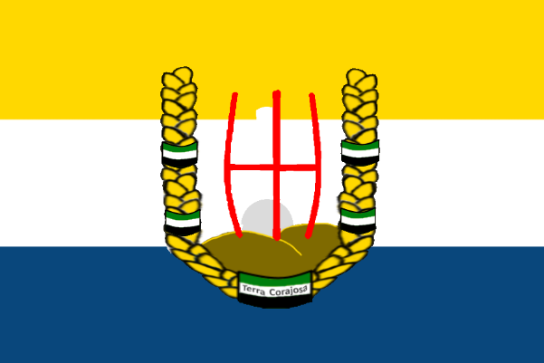

| Rozloha: | +- 70-80 Chunků[N] |
|---|---|
| Hlavní Město: | Neznámé[N] |
| Stavby: | Celnice Domy na prodej Dvojpatrový obchod Úřad Škola Dvě hospody Nether Portál Hromosvody Rozhledna Sídlo gardy Sídlo krále apod. |
|---|
| Počet Obyvatel: | 5 |
|---|---|
| Jazyky: | Čeština |
| Náboženství: | Ateismus - 100%[N] |
| Státní Zřízení: | Loutkový Stát |
|---|---|
| Vznik: | 8. Července 2022[N] |
| Zánik: | Konec serveru |
| Král: | Graphite |
| Měna: | Corajská Blita (Neimplementovaná) Rudy |
| Předcházející | Následující |  Terra Corajosa (Loutkový Stát) | Žádné |
|---|
Druhá Republika Terra Corajosa byl státní útvar existující na Třetí Sezóně FlaMaCraftu. Velel jí neustále Graphite ale díky zapojení se deada do stavění dosáhla růstu doposud nevídaného. Žili zde:
Po vyhlášení nezávislosti od Norte Tubaero se stát rozrůstal ve velkém. Lidé byli aktivní, rozrostlo se obchodování s vesničany a farmaření šlo na vršek. dead2009cz postavil sídlo vlády, což se stalo jednu z něho největších zásluh státu. Avšak někdy okolo Září začalo napětí mezi Norte Tubaero a Terra Corajosa po již zapomenuté zprávě od deada, který rychle poté zkonstruoval stěny kvůli rozhořčení krále Graphita a přípravu na válku. 9. Září 2022 uzavřela Terra Corajosa alianci s In Alia Manu a darovala jí území na severu pro konstrukci ambasády. Krátce poté se v konferenčním sále v sídle krále svolalo jednání které nakonec situaci uklidnilo, a Terra Corajosa zůstala v alianci s In Alia Manu až do konce.
Terra Corajosa obsahovala 3 hlavní správní celky, jejiž názvy už výrazně upadly v zapomění.

Hlavní Území republiky Terra Corajosa byla hlavně určena pro obyvatelnost a kvalitu života hráčů, a tudiž obsahovala spoustu drobností jako jsou například bazény u deadova domu, tržnice, obchod, školu, dvě hospody, apod.
Tato oblast sloužila hlavně pro ubytování a bezpečnost vesničanů. Obsahovala (sotva) funkční množírnu, farmy, pár golemů, a činžovní dům ve kterém bydleli.
Jo... tahle oblast ani neměla jméno... Vlajku tentokrát dělal dead2009cz, a sloužila primárně pro umístění automatických farem, včetně nikdy nezprovozněné farmy na železo.
Díky znovuzískání své nezávislosti se symbolika vrátila zpátky k původní trikolóře se státním znakem ve středu.